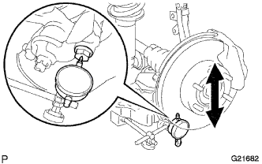

ПЕРЕДНИЙ НИЖНИЙ РЫЧАГ ПОДВЕСКИ > ПРОВЕРКА БЕЗ СНЯТИЯ С АВТОМОБИЛЯ |
| 1. СНИМИТЕ ПЕРЕДНЕЕ КОЛЕСО |
| 2. ПРОВЕРЬТЕ НИЖНИЙ РЫЧАГ ПЕРЕДНЕЙ ПОДВЕСКИ № 1 |
Установите гайки ступицы на диск.
|  |
С помощью индикатора часового типа убедитесь в отсутствии чрезмерного люфта нижнего шарового шарнира, отжимая гайки ступицы вверх-вниз с усилием 294 Н (30 кгс, 66 фунт-сил).
| 3. УСТАНОВИТЕ ПЕРЕДНЕЕ КОЛЕСО |